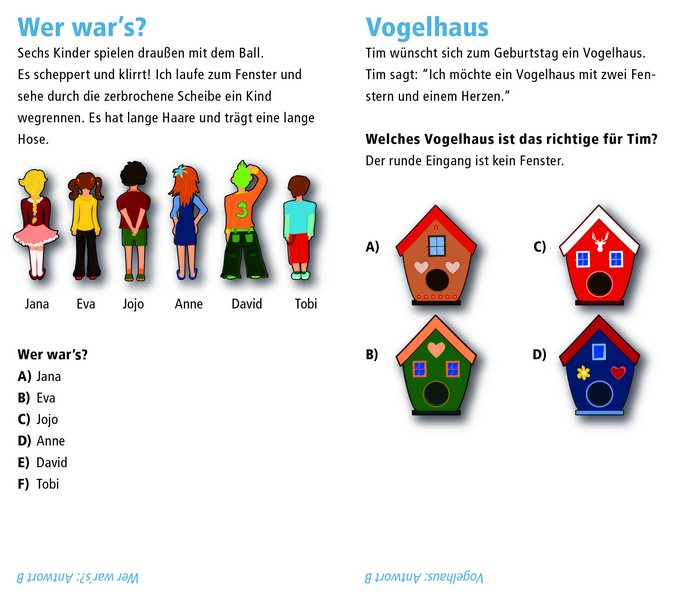
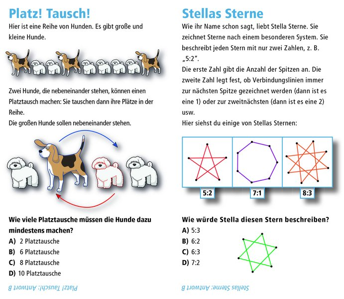

Informatik im KalkSpace
Mit dem Biber um die Wette knobeln
Wusstest Du, dass es Biber im Weltraum gibt? Wir vom Kalkspace nehmen Dich mit auf die Reise zu Deutschlands größtem Informatik-Wettbewerb. Halt, stopp! Nicht direkt denken, dass das nichts für Dich ist. Du musst Dich nicht gut mit Computern auskennen oder gut in Mathe sein. Aber vielleicht hast Du ja Lust auf ein wenig Knobeln? Und Du merkst erst nachher, dass das Informatik ist - versprochen.
AnmeldenWann geht's los?
Samstag den 02. Oktober 2021
- Klasse 3/4 und 5/6: 11:00 - 12:30 Uhr
Wir treffen uns um 11:00 Uhr im Kalkspace (Olpener Straße 33) - und starten mit einem Corona-Schnelltest. Beim Astronaut*innentraining zeigen wir euch, wie das alles geht und machen euch fit für den Wettbewerb. Wer beim Training dabei ist, ist automatisch für den Wettbewerb qualifiziert. Das Angebot ist kostenlos.
Wettbewerb
Der Informatik-Biber ist Deutschlands größter Online-Schülerwettbewerb im Bereich Informatik. Er fördert das digitale Denken. Die Aufgaben erfordern keinerlei Informatik-Vorkenntnisse. Grundschüler*innen lösen 9 Aufgaben in 30 Minuten. In den Klassen 5 und 6 werden 12 Aufgaben in 35 Minuten bearbeitet.
Beispielaufgaben
3. und 4. Klasse
5 bis 8. Klasse
Was ist der Kalkspace?
Das ist ein Ort in Kalk und Online, an dem Menschen gemeinsam Dinge tun. Die haben oft etwas mit Computern zu tun und/oder Weltverbesserung im Allgemeinen. Wir sind ein gemeinnütziger Verein und unterstützen ehrenamtlich Kinder und Erwachsene dabei, Zugang zu Informatik zu bekommen.
Zur Kalkspace-Webseite